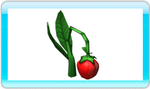
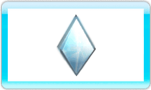
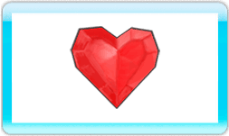

11 |
Pickups |
 |
|
 Tasty Red Berries are your favorite snack! They charge your FurPower bar, giving you the energy to use your special abilities (FurPowers). When you run out of berries, simply wait for them to grow back!  These crystals are extremely valuable to all the Furballs, so pick them up to improve your score or even get some extra lives!
 Red crystals will heal your Furball when they are picked up, but you must defeat an enemy to get your hands on them!
The precious, golden Furry Token permanently improves your maximum level of health.
When collected, Silver Furry Tokens permanently improve your FurPower bar capacity, allowing your Furballs to eat more Red Berries and therefore save energy for later use.
Bronze Furry Tokens improve your maximum level of stamina; the more stamina you have, the more you can attack without exhausting your Furball! |
 |
 |
 |